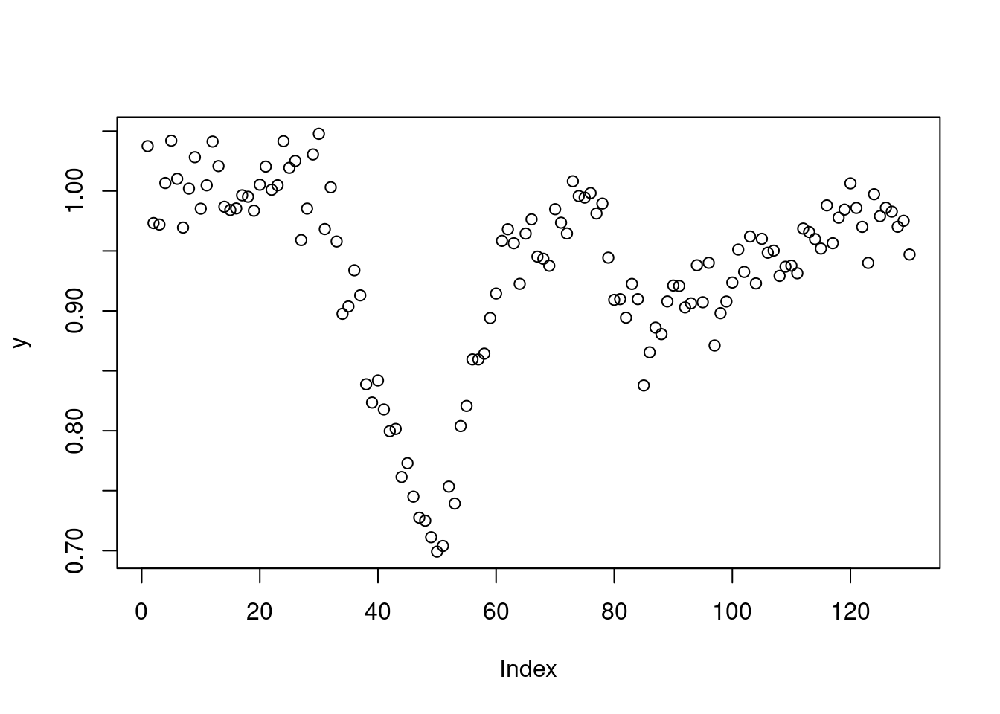
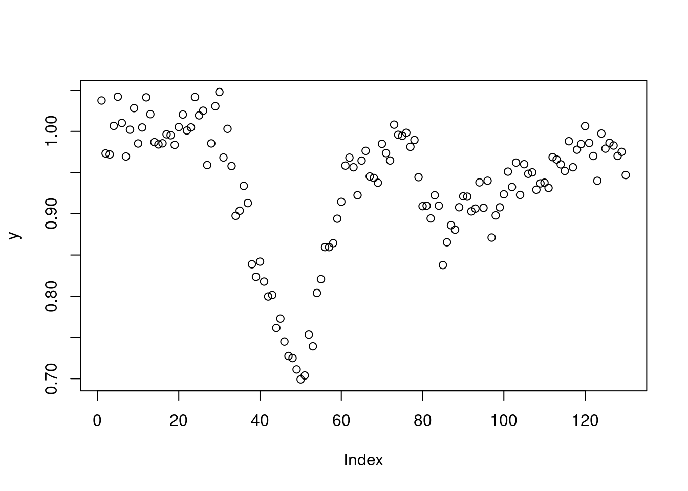
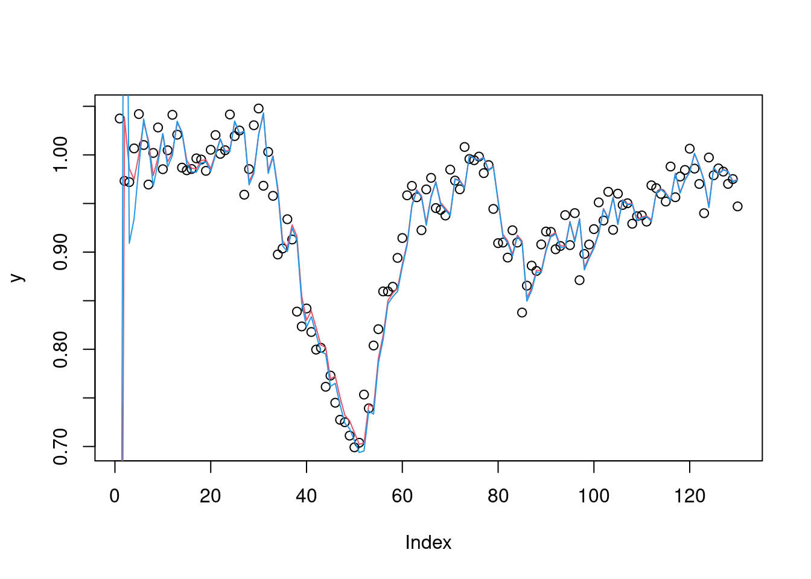
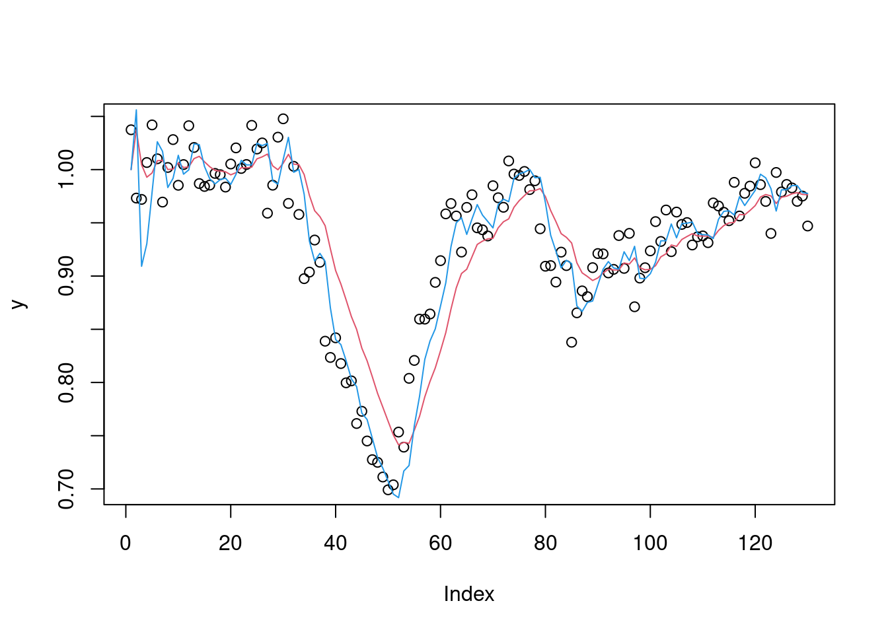
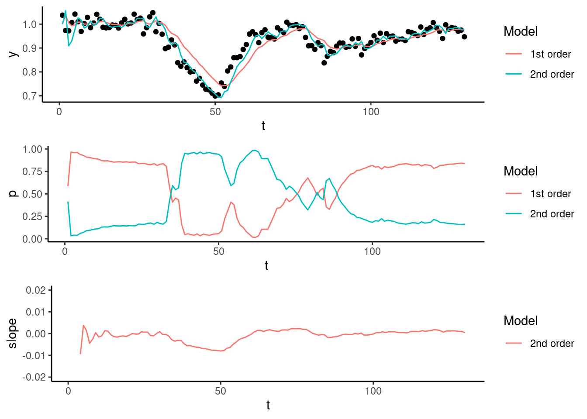

knitr::opts_chunk$set(message = FALSE, warning=FALSE)
library(dlm)
load("data_FDA.Rdata")
y <- data$obs
plot(y)
We present an example on online estimation of perturbations of animal trajectory using a switching dynamic linear model. We use one dynamic model for the unperturbed state and a separate model for the perturbed state, and a discrete latent variable \(s_t \in {\{unperturbed,perturbed\}}\) indicates which model is active at each time. By observing the data we see that in the unperturbed state the series has a constant mean and in the perturbed state there is clear change in the slope. This document is a supplement to paper “Quantification of resilience in farm animals” by Taghipoor et al.
knitr::opts_chunk$set(message = FALSE, warning=FALSE)
library(dlm)
load("data_FDA.Rdata")
y <- data$obs
plot(y)
We model the unperturbed state using a local level model (1st order polynomial) and the perturbed state using a local linear trend model (2nd order polynomial). In the local level model observations are modeled as having mean \(\mu_t\) which is subject to random changes over time. The local level model is given by:
\[\begin{aligned} y_t = \mu_t + v_t, \quad v_t \sim N(0, V) \\ \mu_t = \mu_{t-1} + w_t, \quad w_t \sim N(0, W) \end{aligned}\]The local linear trend model additionally expects the level \(\mu_t\) to evolve with a slope of \(\beta_t\). The local linear trend model is defined as:
\[\begin{aligned} y_t = \mu_t + v_t, \quad v_t \sim N(0, V) \\ \mu_t = \mu_{t-1} + \beta_{t-1} + w_{t,1}, \quad w_{t,1} \sim N(0, \sigma^2_\mu) \\ \beta_t = \beta_{t-1} + w_{t,2}, \quad w_{t,1} \sim N(0, \sigma^2_\beta) \end{aligned}\]We will use the dlm package to fit the models, the package provide model design function dlmModPoly for defining polynomial DLMs. We start by estimating the parameters of the models using maximum likelihood (see vignette("dlm") for an introduction of the package explanation of estimation using dlmMLE).
buildFun1 <- function(x) {
dlmModPoly(1, dV = exp(x[1]), dW = exp(x[2]))
}
fit <- dlmMLE(y, parm = c(0.1, 0.01), build = buildFun1)
buildFun2 <- function(x) {
dlmModPoly(2, dV = exp(x[1]), dW = exp(x[2:3] ))
}
fit2 <- dlmMLE(y, parm = c(.1,.1,.01), build = buildFun2)
m1 <- buildFun1(fit$par)
m2 <- buildFun2(fit2$par)
print(m1)$FF
[,1]
[1,] 1
$V
[,1]
[1,] 0.0001688793
$GG
[,1]
[1,] 1
$W
[,1]
[1,] 0.0005208322
$m0
[1] 0
$C0
[,1]
[1,] 1e+07print(m2)$FF
[,1] [,2]
[1,] 1 0
$V
[,1]
[1,] 0.0001615674
$GG
[,1] [,2]
[1,] 1 1
[2,] 0 1
$W
[,1] [,2]
[1,] 0.0005383113 0.000000e+00
[2,] 0.0000000000 9.309134e-12
$m0
[1] 0 0
$C0
[,1] [,2]
[1,] 1e+07 0e+00
[2,] 0e+00 1e+07Apply the filters and plot the results
f1 <- dlmFilter(y, m1)
f2 <- dlmFilter(y, m2)
plot(y)
lines(f1$f, col=2)
lines(f2$f, col=4)
We notice that the model provide too noisy estimates of the filtered state for our application, this could be because the data contains 2 separate regimes. We refit the model with higher values for V and W. In a real online application the model parameters are usually estimated on training data obtained from experiments or farm records. After refitting we are happy with estimates for this application.
m1 <- dlmModPoly(1, dV = .2/100, dW = .01/100, m0 = c(1), C0 = 10)
m2 <- dlmModPoly(2, dV = .2/100, dW = c(.1, .0001)/100, m0 = c(1,0), C0 = diag(c(10, 10)))
f1 <- dlmFilter(y, m1)
f2 <- dlmFilter(y, m2)
plot(y)
lines(f1$f, col = 2)
lines(f2$f, col = 4)
We observe that local level model provides good fit for the data for first part of the series and that the estimates from the linear trend model are clearly noisier. However, when the value of observations drop sharply the linear trend model performs clearly better and the local level model is no longer able to track the observations. Next we’ll see how we can detect which model is more appropriate for each observation.
In order to determine the system state based on our observations and 2 DLMs we need to be able to estimate the posterior probability of a model being the correct one for each sample \(y_t\). We will apply a multiprocess class I model from West & Harrison (1997) with added transition propabilities.
We choose the prior probability for each model to be equal:
\[prior = [0.5, 0.5]\]
prior <- c(0.5, 0.5)The likelihood \(l(s)_t\) of each model at time \(t\) is obtained from standard Kalman filter recursions. The dlm package only provides the function dlmLL for calculating the loglikelihood of the entire fitted series. We have added a function (based on dlmLL) to calculate likelihood for each sample in dlmLikelihood.R. Also the 1 step ahead forecast errors could be used in the model instead of likelihoods by replacing the calls to dlmLikelihood with abs(resid(f1)$res).
source("dlmLikelihood.R")
ll1 <- dlmLikelihood(y, m1)
ll2 <- dlmLikelihood(y, m2)
ll <- data.frame(ll1, ll2)We calculate the posterior probability for each state based on our prior and likelihood ratio of the states and plot the results. The gamma matrix is used to set the state transition probability, if you want the make the state switches more sensitive try changing it e.g. to matrix(c(0.9, .1, .1, .9), ncol=2)
# Calculate posterior probabilities of model
posterior_probability <- function(ll, gamma, prior){
T <- nrow(ll)
posterior_probs <- data.frame(array(0, dim = c(T,ncol(ll))))
for (t in 1:T){
posterior <- gamma %*% prior * as.numeric(ll[t,])
prior <- posterior/sum(posterior) # posterior becomes prior for t+1
posterior_probs[t, ] <- prior
}
return(posterior_probs)
}
g1 <- matrix(c(0.95, .05, .05, .95), ncol=2)
pp1 <- posterior_probability(ll, g1, prior)We obtain the state at time T by selecting the column with the highest posterior probability from matrix pp1. The figure below shows the filtered state estimate for both of the model, the probability of each being active and the estimated slope of y_t for the second order model. The linear trend model has higher posterior probability during the perturbations and provides an online estimate of timing of perturbations that can be used to make management decisions. The online estimate of slope has similar shape to one provided by the differential smoothing method example.
states <- function(x){apply(x, 1, which.max)}
library(ggplot2)
names(pp1) <- c("p1", "p2")
df <- data.frame(t = 1:length(y), y, f1 = f1$f, f2 = f2$f, pp1, state = states(pp1), slope = dropFirst(f2$m[,2]))
p_df <- rbind(data.frame(t = 1:length(y), p = pp1$p1, Model = "1st order"),
data.frame(t = 1:length(y), p = pp1$p2, Model = "2nd order")
)
p1 <- ggplot(df, aes(x = t, y = y)) + geom_point() +
geom_line(aes(x=t, y=f1, col=factor(1))) +
geom_line(aes(x=t, y=f2, col = factor(2))) +
scale_colour_discrete(name ="Model", labels=c("1st order", "2nd order"))
p2 <- ggplot(p_df, aes(y = p, x=t)) + geom_line(aes(color = Model))
p3 <- ggplot(df, aes(y = slope, x=t, color="1")) + geom_line() + ylim(c(-0.02, 0.02)) +
scale_colour_discrete(name ="Model", labels=c("2nd order"))
theme_set(theme_classic())
update_geom_defaults("line", list(size = 1.1))
gridExtra::grid.arrange(p1, p2, p3)
Giovanni Petris (2010). An R Package for Dynamic Linear Models. Journal of Statistical Software, 36(12), 1-16. URL: https://www.jstatsoft.org/v36/i12/.
Petris, Petrone, and Campagnoli. (2009). Dynamic Linear Models with R. https://link.springer.com/book/10.1007/b135794
West, M. & Harrison J. (1997) Bayesian Forecasting and Dynamic Models. https://link.springer.com/book/10.1007/b98971